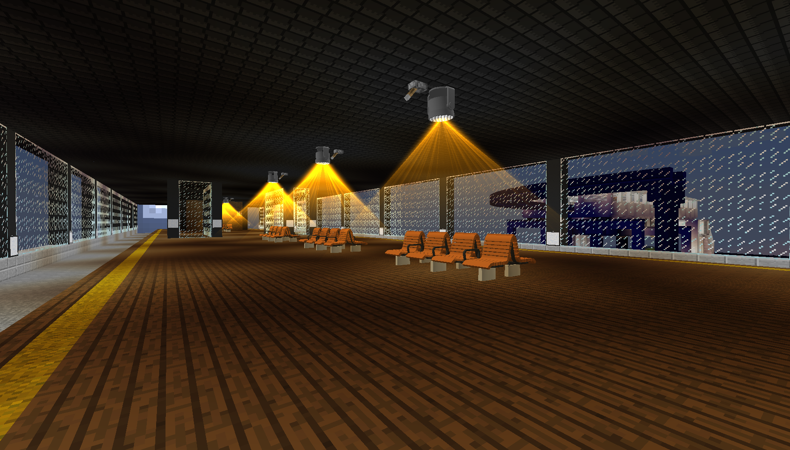
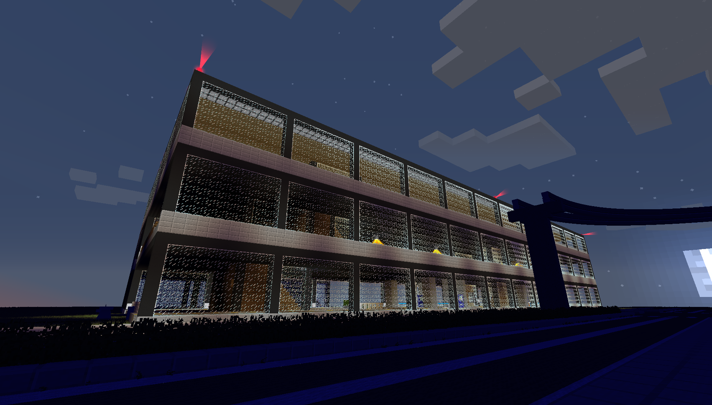
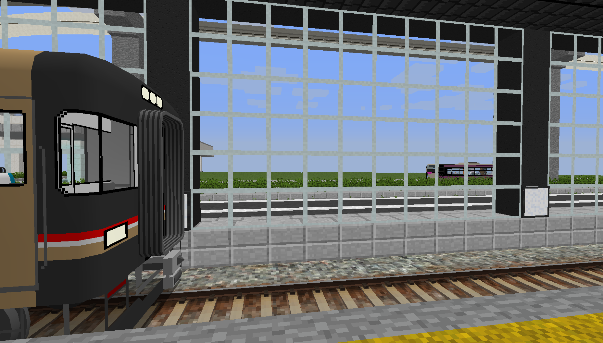
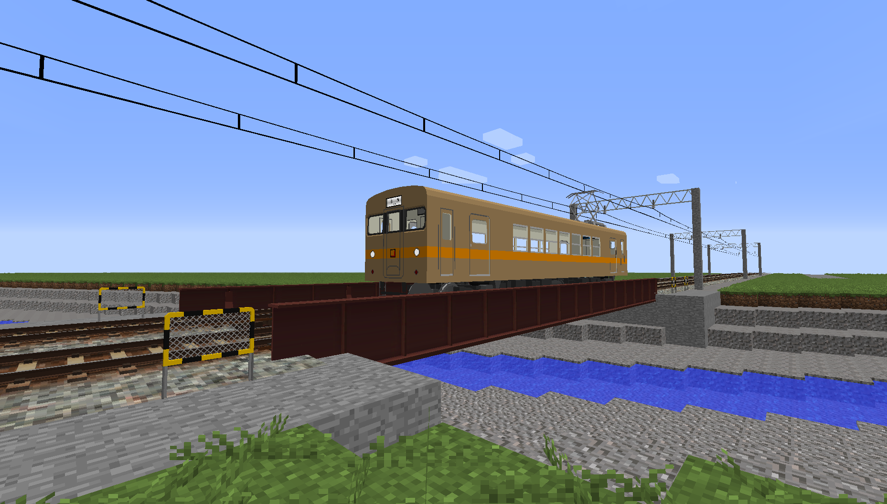
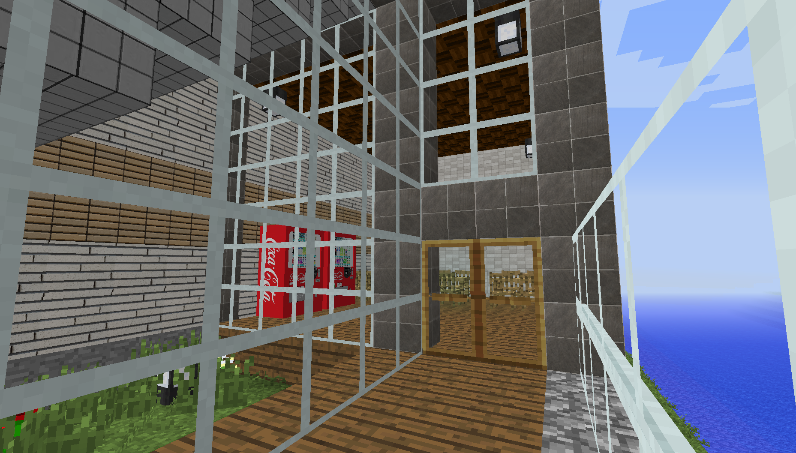

海外ミームが面白い話 他2019/06/20
こんにちは。今日から本格的にホームページで発信していきます。
今日なんですが、当たり前かもしれない話をします。
海外ミームって、面白いですよね。
あの勢いと、元動画の面白さ。さらに、組み合わせ方も最高です。
このホームページを見ている方はかなりご存知かと思いますが、おすすめの海外ミームを見つけたので貼っていきますね。
要するに今日は面白いミーム見つけたから貼るよっていう回です。前半は。
このミームの原曲は実は取説鯖で流行ってるらしいです。
これは有名ですかね。時々ツイッターに流れてきてましたね。
それで、話は急に変わるんですが、さっきちょろっと言った取説鯖に最近入り浸っておりまして。
そりゃもうどっぷりと。路面電車とか市街地を今作っとりましてね。
今日はそんな取説鯖のSSを貼ってみようかな、と思います。



ざっとこんな感じ。出てくる車両は全部自社車両です。
さて、今日はここまでにしますかね。（きりがなくなる）
それでは、ありがとうございました！
Please share:)→
記事一覧に戻る